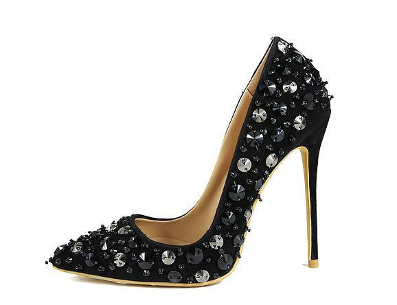
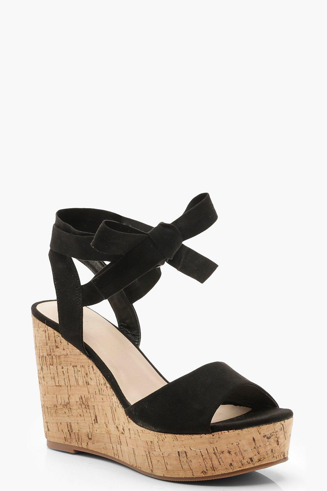
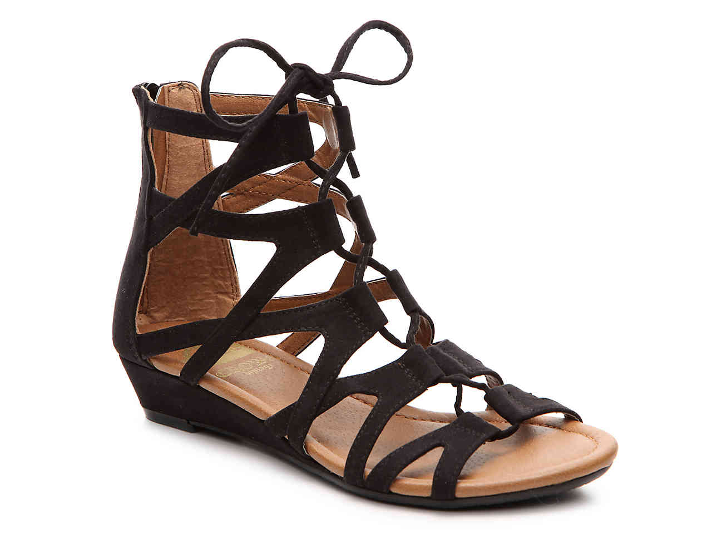
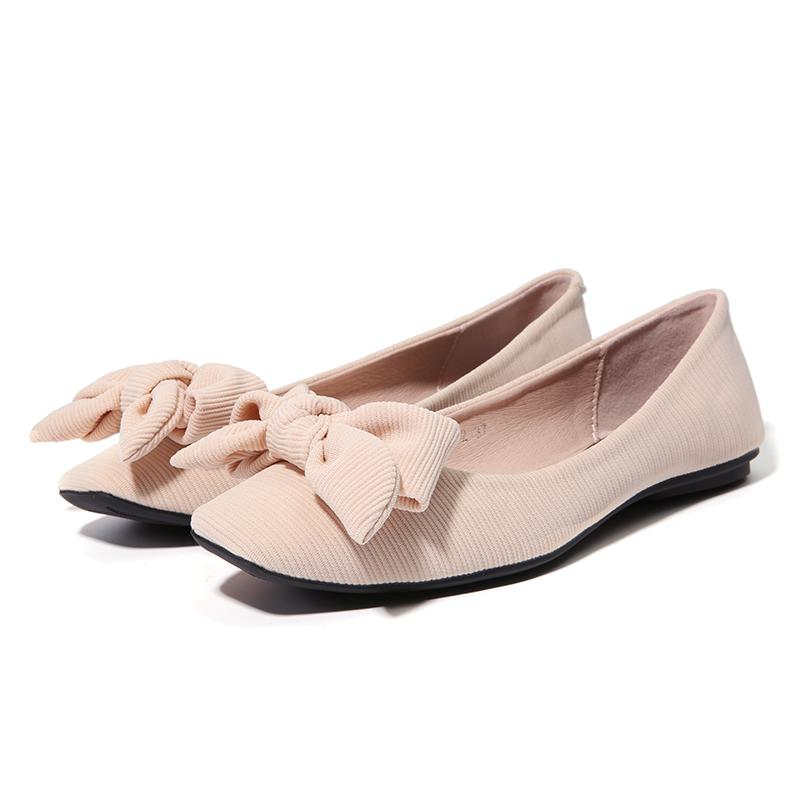
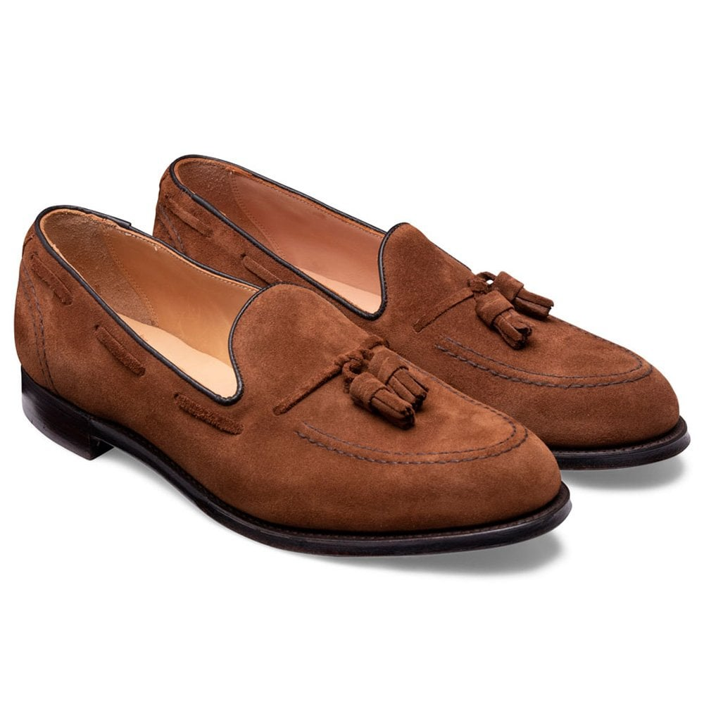

Remember that time we’ve given you a rundown on the flats that you should fall for this season? Well, it’s the time early November and our motto is not just to let you stock up essential boots for fall but all-round-trendy-footwear collection. We believe that the below selection of chic choices in footwear for women not only enhances the style, but it also enhances the level of walkability. What are the Different Types of Shoes & Footwear Brands for Girls? Footwear shopping is not as easy as many ‘shoe-noobs’ would think it is. What style of shoes do I buy? What kind of outfits will they go with? How much heel is too much heel? Although we cannot answer most of those questions ourselves, here are a few questions we can help you. So in other words, if you’re getting to go shoe shopping, do not forget to take a walk-through into this ultimate footwear list of shoe styles with their names. Myntra is one of the top locations in India for footwear. Do check out some of the best Myntra Coupons to make a saving on your purchase.
There are casual shoes for girls, and there are ladies formal shoes, there is party wear footwear, there are date ready shoes. But the pumps are the most flexible pair of shoes for women there can ever be! Just ask yourself, what colour of shoes go with everything, and pick your self a pair of pumps in that shade!

Defined by the thin, high heel, stilettos are both a blessing and a curse to women. The shoe style is such that it can work as formal footwear for ladies and glamorous style shoes in one go! What are the types of heels that have made many a sensible woman empty her savings? Stilettos.
A kitten heel is a short, slender heel, usually from 1.5 inches to 1.75 inches high, with a slight curve setting the heel in from the back edge of the shoe. Known to be the favourite of power packed women like Audrey Hepburn, Michelle Obama, and Hilary Clinton, these are on the top 5 list of best women formal shoes.

This type of shoes is defined by a single piece of material serving as both the sole and the heel. Typically with a sole that is much thicker at the back compared to the front, making it high heeled shoe style.
T-strap sandals with several straps running across the front of the foot, Gladiator sandals are the most comfortable and flexible of the different types of shoes for women.
Ballet flats, ballerinas or Dolly shoes are inspired by women’s soft ballet shoe, with a very thin heel creating an appearance of no heel at all, with closed toes.
The most popular and commonly used form of the slip-on, loafers are also known as slippers. For women, these have to be the most comfortable types of formal shoes.
